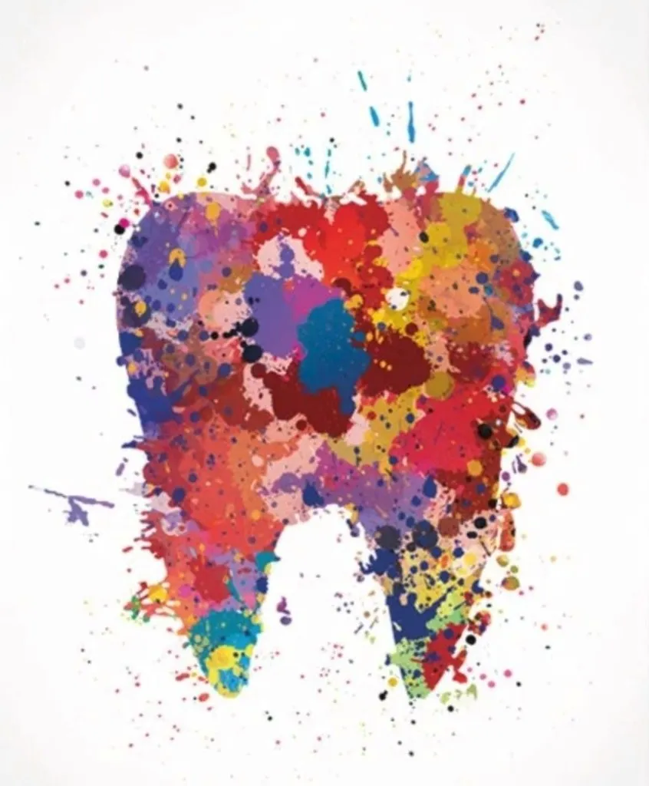
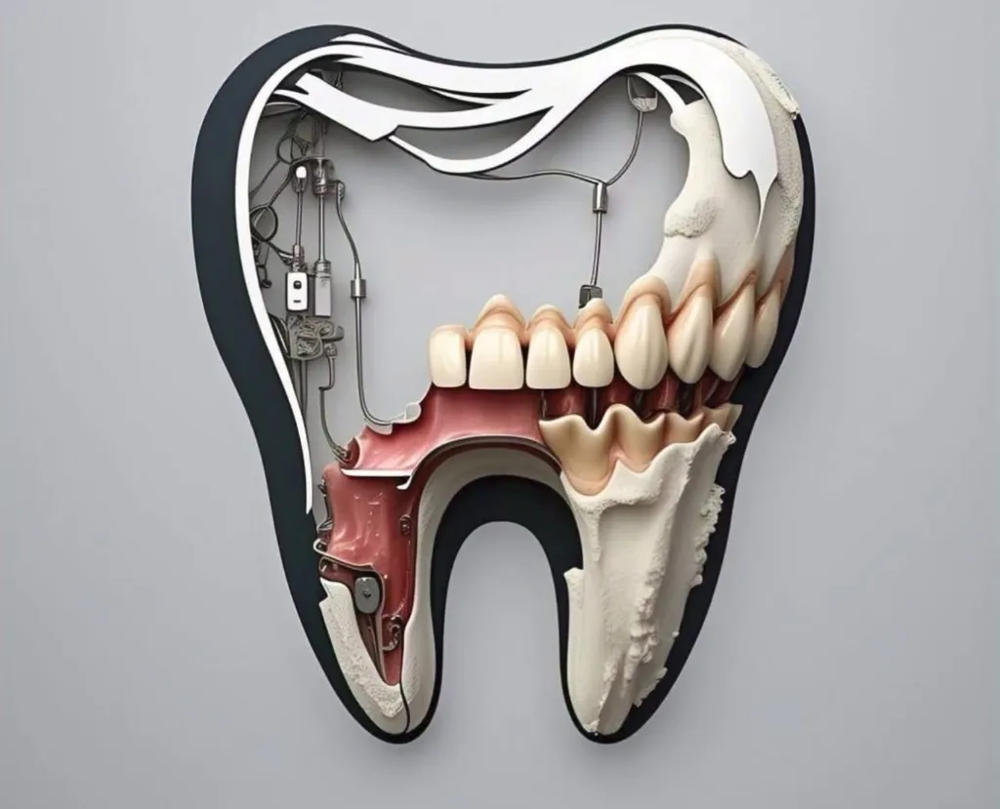
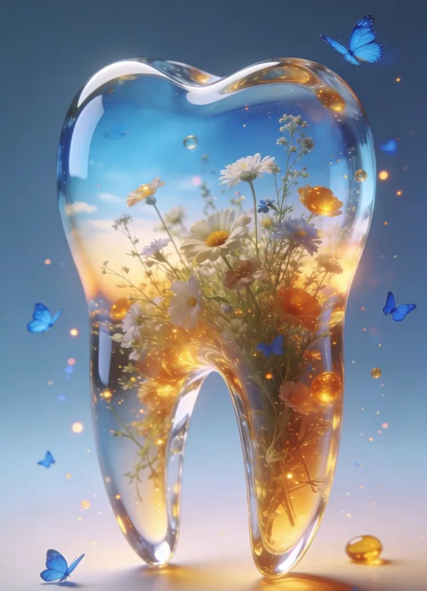
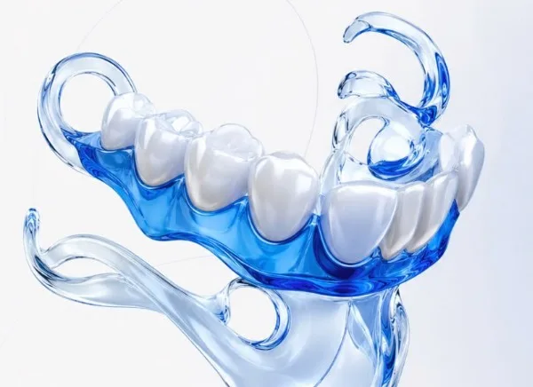
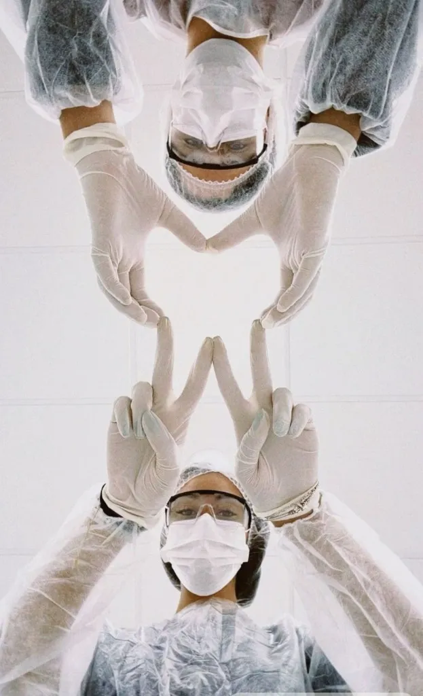

Протезы, которые держатся — сделаны индивидуально
Съёмные протезы в Казани по вашим слепкам — с примерками, пока посадка не станет удобной. Гарантия 1 год.



Многие переживают, что протез будет
-
Выпадать
Протез делаем по индивидуальным слепкам: он повторяет рельеф ваших дёсен и держится за счёт точного прилегания.
-
Плохо держаться
Проводим примерки, пока посадка не станет удобной. Коррекции в течение года — бесплатно.
-
Мешать во время еды
Конструкцию подбираем под ваш прикус и привычки в еде. Есть нейлоновый вариант без металлических кламмеров.
-
Выглядеть неестественно
Цвет и форму зубов и оттенок десны подбираем под ваше лицо.
Поэтому протез должен создаваться индивидуально.

Виды протезов и цены от 19 900 ₽
-
Полный акриловый протез
При полном отсутствии зубов.
от 19 900 ₽
-
Частичный протез
Замещает несколько утраченных зубов.
от 24 900 ₽
-
Нейлоновый протез
Мягкий, без металлических кламмеров.
от 34 900 ₽
-
Бюгельный протез
На металлическом каркасе, распределяет нагрузку.
от 49 900 ₽
Починка и перебазировка — стоимость после осмотра.
Как проходит лечение пять шагов до удобной посадки
-
Консультация и осмотр
Врач осматривает полость рта, выслушивает пожелания и предлагает подходящие варианты протеза с ценами.
-
Слепки
Снимаем слепки ваших челюстей — по ним протез повторит рельеф дёсен.
-
Примерка
Проверяем посадку, прикус и внешний вид. Примеряем столько раз, сколько нужно.
-
Изготовление
Зубной техник изготавливает протез с учётом всех правок после примерок.
-
Выдача и бесплатные коррекции
Вы получаете протез и рекомендации по уходу. Коррекции в течение года — бесплатно.

Наши врачи ортопеды, которые не торопят
-
Марина Валиева
Врач-стоматолог-ортопед, стаж 14 лет
Подробно объясняет каждый шаг и подбирает конструкцию под образ жизни пациента. Любит, когда пациент уходит с протезом, о котором забывает уже через неделю.
-
Алия Галиева
Врач-стоматолог-ортопед, стаж 9 лет
Занимается нейлоновыми и бюгельными протезами, починкой и перебазировкой. Спокойно проводит столько примерок, сколько нужно для удобной посадки.
Отзывы пациентов что говорят после примерок
4,9 · 312 отзывов · Яндекс Карты
-
Боялась, что протез будет выпадать, как у мамы. Сделали три примерки, теперь спокойно ем и разговариваю. Спасибо за терпение.
-
Перебазировали старый протез, который натирал. Объяснили, что и зачем делают, по цене договорились сразу после осмотра.
-
Нейлоновый протез выглядит естественно, но привыкала около двух недель. На коррекцию записали быстро, денег не взяли.
Вопросы и гарантии отвечаем заранее
-
Гарантия 1 год
На все съёмные протезы с момента выдачи.
-
Коррекции бесплатно
В течение года после выдачи — столько, сколько нужно.
-
Лицензия
№ ЛО-16-01-000000 от 01.01.2020 (демо).
Сколько времени занимает изготовление протеза?
Обычно 2–3 недели и 3–5 визитов: консультация, слепки, одна или несколько примерок и выдача. Точный срок врач назовёт на консультации.
Как понять, какой протез мне подходит?
На консультации врач осмотрит полость рта, расспросит о привычках и предложит подходящие варианты с ценами. Решение остаётся за вами.
Неприятно ли снимать слепки?
Процедура занимает несколько минут. Слепочную массу подбираем так, чтобы вам было комфортно, и делаем паузы, если нужно.
Сколько привыкать к новому протезу?
Чаще всего от нескольких дней до 2–3 недель. Если что-то натирает или мешает, приходите на коррекцию — в течение года это бесплатно.
Можно ли починить или перебазировать старый протез?
Да. Врач осмотрит протез и скажет, можно ли его починить или подогнать заново. Стоимость называем после осмотра.
Что взять с собой на консультацию?
Паспорт, старый протез, если он есть, и снимки, если делали их недавно. Ничего специально готовить не нужно.
Запись и контакты перезвоним в течение 15 минут
Клиника «Опора»
- Телефон
- +7 (843) 000-00-00
- Telegram
- @opora_demo
- Адрес
- Казань, ул. Чернышевского, 200
- Часы работы
- Пн–Пт 9:00–20:00, Сб 10:00–16:00, Вс — выходной
- Принимаем пациентов из районов
-
- Вахитовский
- Советский
- Приволжский
- Ново-Савиновский
- Московский
- Кировский
- Авиастроительный